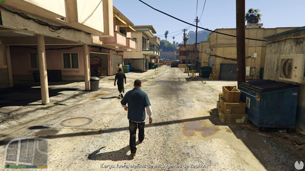
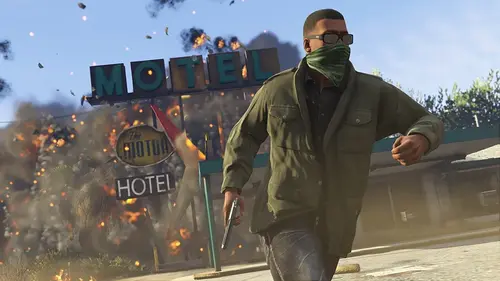

GTA V
A GTA V egy nyílt világú akciójáték, amely három főszereplő történetét követi Los Santos városában, autózással, lövöldözéssel és küldetésekkel, valamint egy népszerű online móddal, a GTA Online-nal, 2013-as megjelenése óta óriási sikert aratva.
- Műfaj: Akció
- Platformok: PC, Xbox Series, PlayStation
- Fejlesztő: Rockstar North
- Kiadó: Rockstar Games
- Megjelenés: 2013. szeptember 17.

Játékfunkciók
A GTA V játékmenete szabad felfedezésre, küldetések teljesítésére, járművezetésre és harcra épül, a játékosok bármikor válthatnak a három főszereplő között, miközben különféle bűnözői tevékenységeket végezhetnek, mint például rablások, üldözések és akciójelenetek.
A GTA V grafikája részletes és élethű, realisztikus fény- és időjárási effektekkel, a művészeti tervezés pedig gondosan megalkotott városi és vidéki környezeteket kínál, amelyek Los Angeles és Kalifornia hangulatát tükrözik élénk színekkel és változatos látképekkel.
A GTA V hangzásvilága valósághű effektekkel, profi szinkronhangokkal és gazdag háttérzajokkal teremti meg a hiteles atmoszférát, a zene pedig változatos rádióállomásokon keresztül szól, amelyek különböző műfajokat kínálnak a hiphoptól a rockon át az elektronikus zenéig.
A GTA V multiplayer módja, a GTA Online, lehetővé teszi, hogy a játékosok együtt vagy egymás ellen játsszanak, küldetéseket teljesítsenek, versenyezzenek, vállalkozásokat indítsanak és saját karaktert, járműveket, házakat alakítsanak ki egy folyamatosan bővülő online világban.
